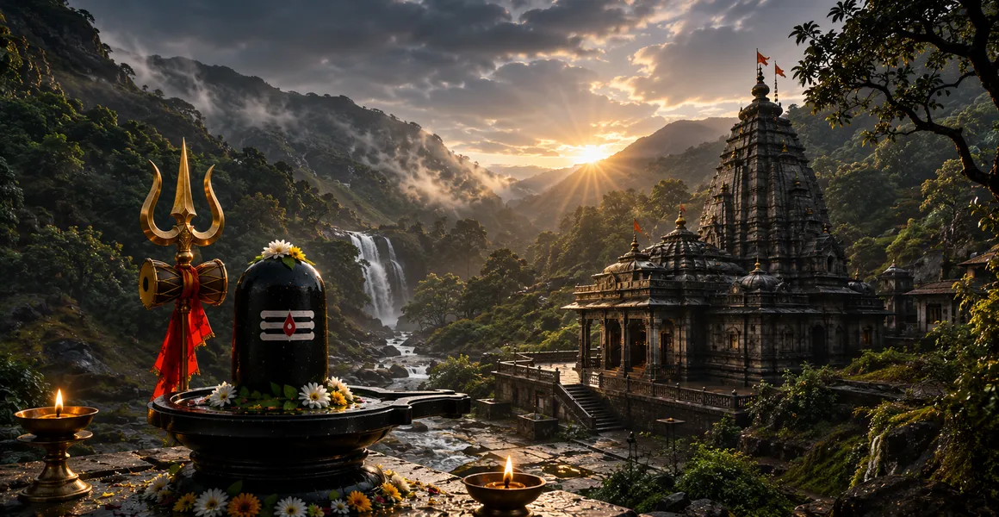

भीमाशंकर की दिव्य शक्ति
कोटिरुद्र संहिता का चौदहवाँ अध्याय राक्षस भीम के क्रूर अत्याचार, धर्मियों के उत्पीड़न और भीमाशंकर ज्योतिर्लिंग की भव्य अभिव्यक्ति का वर्णन करता है।
यह बताता है कि कैसे भगवान शिव ने अधर्म का विनाश करने और ब्रह्मांड में ब्रह्मांडीय व्यवस्था को बहाल करने के लिए एक शक्तिशाली, ज्वलंत रूप धारण किया।
यह अध्याय दर्शाता है कि दैवीय क्रोध अंततः समर्पित और धर्मी लोगों के लिए सर्वोच्च सुरक्षा का एक साधन है।
अध्याय 14 की मुख्य बातें
राक्षस भीम का अत्याचार
अहंकारी दानव ने सभी लोकों में कहर बरपाया, ऋषियों और राजाओं को परेशान किया।
राजा कामरूप की भक्ति
भक्त राजा कामरूप ने अत्याचारी द्वारा कैद किए जाने पर भी शिव की पूजा की।
धधकती अभिव्यक्ति
भगवान शिव अपने असहाय उपासकों की रक्षा के लिए उग्र रूप में प्रकट हुए।
अधर्म का नाश
शिव की तेज दृष्टि से राक्षस भीम तुरंत भस्म हो गया।
स्थायी निवास
देवताओं के अनुरोध पर, शिव स्थायी रूप से भीमशंकर बने रहे।
साहस और ताकत
भीमाशंकर की पूजा करने से भय दूर होता है और अटूट आंतरिक शक्ति मिलती है।
इस अध्याय में मुख्य विषय
- 01राक्षस भीम की वंशावली और जन्म→
- 02तीनों लोकों में अनियंत्रित अत्याचार→
- 03समर्पित राजा कामरूप का कारावास→
- 04राजा कामरूप की अटूट शिव पूजा→
- 05राक्षस भीम का लिंग को उकसाना→
- 06भीमाशंकर की उग्र अभिव्यक्ति→
- 07अत्याचारी दानव का भस्मीकरण→
- 08शाश्वत उपस्थिति के लिए देवताओं की याचिका→
- 09उपासना की आध्यात्मिक महिमा और गुण→
- 10भक्तों की रक्षा और भय का निवारण→
- 11अध्याय 15 की ओर →
राक्षस भीम की वंशावली और जन्म
अध्याय 14 की शुरुआत राक्षस भीम की उत्पत्ति के विवरण से होती है, जो कुंभकर्ण से पैदा हुआ था और उसके पास अपार शारीरिक शक्ति और क्रूर स्वभाव था।
काली राक्षसी प्रवृत्तियाँ विरासत में पाकर, भीम ने अपनी शक्ति और आतंक के माध्यम से दुनिया को जीतने की कोशिश की।
तीनों लोकों में अनियंत्रित अत्याचार
बेजोड़ शक्ति का वरदान प्राप्त करके, भीम ने देवताओं को अपने अधीन कर लिया, ऋषियों को परेशान किया और तीनों लोकों में धार्मिक वैदिक अनुष्ठानों को बाधित कर दिया।
धर्म (धर्म) को दबा दिया गया, और राक्षस के अहंकार के विस्तार के कारण सभी जीवित प्राणियों में भय व्याप्त हो गया।
समर्पित राजा कामरूप का कारावास
जब सदाचारी और पवित्र राजा कामरूप ने राक्षस की आसुरी शक्ति के सामने झुकने से इनकार कर दिया, तो भीम ने हिंसक हमला किया और उसे कैद कर लिया।
राजा को जंजीरों में बंद कर दिया गया था, फिर भी उनकी आत्मा अखंडित थी और पूरी तरह से भगवान शिव के प्रति समर्पित थी।
राजा कामरूप की अटूट शिव पूजा
अपने कालकोठरी के अंदर भी, राजा कामरूप ने सावधानीपूर्वक एक मिट्टी का शिवलिंग बनाया और भक्ति के गहन आंसुओं के साथ भगवान की पूजा की।
उनकी गहन प्रार्थनाओं ने शारीरिक बंधन को पार कर आध्यात्मिक अनुग्रह की एक शक्तिशाली ढाल तैयार की।
राक्षस भीम का लिंग को उकसाना
यह जानकर क्रोधित हुआ कि जेल में बंद राजा शिव की पूजा कर रहा है, अहंकारी राक्षस तलवार से मिट्टी के लिंग को नष्ट करने के लिए दौड़ा।
भीम ने मजाक में भगवान को चुनौती दी कि यदि वे वास्तव में पवित्र रूप में रहते हैं तो वे अपनी शक्ति प्रदर्शित करें।
भीमाशंकर की उग्र अभिव्यक्ति
अपने भक्त पर हमले और लिंग के अपमान को सहन करने में असमर्थ, भगवान शिव एक भयानक, ज्वलंत रूप में पृथ्वी से बाहर निकले।
इस विस्मयकारी अभिव्यक्ति ने अंधी ब्रह्मांडीय ऊर्जा को प्रसारित किया, जो ब्रह्मांडीय संतुलन को बहाल करने के लिए तैयार थी।
अत्याचारी दानव का भस्मीकरण
एक क्रोध भरी गर्जना और एक उग्र दृष्टि से, भगवान शिव ने तुरंत अहंकारी राक्षस भीम और उसकी दुष्ट सेना को भस्म कर दिया।
ब्रह्माण्ड ने राहत की सांस ली क्योंकि अधर्म का उन्मूलन हो गया और न्याय निर्णायक रूप से स्थापित हो गया।
शाश्वत उपस्थिति के लिए देवताओं की याचिका
राहत महसूस करते हुए और बहुत खुश होकर, इंद्र और इकट्ठे हुए देवताओं ने भगवान की स्तुति की और उनसे दुनिया की सुरक्षा के लिए उसी उग्र रूप में रहने का अनुरोध किया।
उनकी प्रार्थना स्वीकार करते हुए शिव ने स्वयं को भीमाशंकर ज्योतिर्लिंग के रूप में स्थायी रूप से स्थापित कर लिया।
उपासना की आध्यात्मिक महिमा और गुण
पाठ इस बात पर जोर देता है कि जो भक्त आस्था के साथ भीमाशंकर की पूजा करते हैं, वे सभी पापों, भय और मन के आंतरिक शत्रुओं से मुक्त हो जाते हैं।
इस पूजा से अर्जित पुण्य पवित्र ग्रंथों में निर्धारित उच्चतम आध्यात्मिक बलिदानों के बराबर है।
भक्तों की रक्षा और भय का निवारण
भीमाशंकर बुरी ताकतों के खिलाफ एक रक्षक के रूप में हमेशा खड़े रहते हैं, और भक्तों को आश्वासन देते हैं कि धर्म हमेशा दुष्टता पर विजय प्राप्त करेगी।
इस तीर्थ का स्मरण विपत्ति का सामना करने वाले साधकों के हृदय में साहस का संचार करता है।
अध्याय 15 की ओर
राक्षस भीम की शक्तिशाली पराजय और भीमशंकर की स्थापना का वर्णन करने के बाद, कथा आसानी से अध्याय 15 में बदल जाती है।
पाठकों को काशी विश्वनाथ की सर्वोच्च आध्यात्मिक महिमा का पता लगाने के लिए आगे बढ़ने के लिए निर्देशित किया जाता है।
अध्याय 14 की मुख्य शिक्षाएँ
न्याय की अनिवार्यता
दैवीय शक्ति के समक्ष अत्याचार और अधर्म का अनिवार्य रूप से पतन होता है।
भक्ति की शक्ति
सच्ची भक्ति कठिन से कठिन कारावास में भी अटल रहती है।
दैवीय सुरक्षा
भगवान शिव स्वयं अपने भक्तों को दुष्ट उत्पीड़कों से बचाते हैं।
अहंकार का नाश
शक्ति से प्रेरित अहंकार को ब्रह्मांडीय कानून द्वारा तुरंत कुचल दिया जाता है।
निडरता
भीमाशंकर की पूजा करने से सभी प्रकार के आंतरिक और बाहरी भय दूर हो जाते हैं।
ब्रह्मांडीय संतुलन
सार्वभौमिक शांति बहाल करने के लिए कभी-कभी उग्र दिव्य ऊर्जा आवश्यक होती है।
आध्यात्मिक चिंतन
भीमाशंकर की कथा एक शक्तिशाली अनुस्मारक के रूप में कार्य करती है कि दुनिया में चाहे कितना भी भारी अत्याचार क्यों न हो, दैवीय न्याय पूर्ण और अमोघ है। जब राजा कामरूप ने जेल की दीवारों के पीछे अपनी भक्ति बनाए रखी, तो उनका विश्वास अत्याचारी की तलवार से भी अधिक मजबूत साबित हुआ। भीमाशंकर साहस के एक शाश्वत प्रतीक के रूप में खड़े हैं, जो हमें आश्वासन देते हैं कि शिव की सुरक्षात्मक कृपा हमारे आध्यात्मिक पथ पर सभी बाधाओं को दूर कर देती है।
अध्याय 14 का संदेश जीना
दबाव में अपने मूल्यों से समझौता करने से इनकार करते हुए, अपने नैतिक और आध्यात्मिक सिद्धांतों पर दृढ़ रहें।
प्रतिकूल परिस्थितियों का सामना करते समय ईश्वरीय सुरक्षा पर भरोसा रखें, यह जानते हुए कि धर्म अंततः अजेय है।
भगवान शिव पर स्थिर ध्यान के माध्यम से व्यक्तिगत दोषों, अहंकार और आंतरिक भय को दूर करने के लिए आंतरिक शक्ति का उपयोग करें।
प्रमुख आध्यात्मिक अवधारणाएँ
शिव का उग्र और शक्तिशाली रूप जिसने राक्षस भीम को परास्त किया।
कुंभकर्ण का अहंकारी पुत्र जिसके अत्याचार से सारी दुनिया अस्त-व्यस्त हो गई।
वह पुण्यात्मा राजा जिसकी अटूट भक्ति ने कारावास पर विजय प्राप्त की।
दैवीय हस्तक्षेप द्वारा अधर्म का लौकिक उन्मूलन।
धधकती ब्रह्मांडीय ऊर्जा धर्मियों की रक्षा के लिए प्रस्फुटित हो रही है।
सर्वोच्च न्याय में अटूट विश्वास से प्रेरित निर्भयता।
अध्याय सारांश
कोटिरुद्र संहिता अध्याय 14 में भीमाशंकर की भयंकर कथा का वर्णन है। जब अत्याचारी राक्षस भीम ने दुनिया भर में अत्याचार किया और मिट्टी के लिंग की पूजा करने के लिए समर्पित राजा कामरूप को कैद कर लिया, तो भगवान शिव राक्षस को भस्म करने के लिए एक ज्वलंत, शक्तिशाली रूप में प्रकट हुए। यह मंदिर धर्म के शाश्वत रक्षक के रूप में खड़ा है, जो अध्याय 15 में काशी विश्वनाथ की खोज का मार्ग प्रशस्त करता है।
अक्सर पूछे जाने वाले प्रश्न
1. कोटिरुद्र संहिता अध्याय 14 का मुख्य विषय क्या है?
अध्याय 14 में राक्षस भीम के अत्याचार, धर्मात्मा राजा कामरूप की कैद और भीमशंकर ज्योतिर्लिंग की उग्र अभिव्यक्ति का विवरण है।
2. इस अध्याय में राक्षस भीम कौन था?
राक्षस भीम कुंभकर्ण का दुर्जेय पुत्र था जिसने दुनिया भर में आतंक फैलाया था और अच्छे राजाओं और ऋषियों पर अत्याचार किया था।
3. भगवान शिव भीमाशंकर के रूप में कैसे प्रकट हुए?
भगवान शिव राक्षस भीम को भस्म करने और अपने भक्तों की रक्षा करने के लिए एक शक्तिशाली, उग्र रूप में प्रकट हुए, और खुद को भीमशंकर के रूप में स्थायी रूप से स्थापित किया।
4. भीमाशंकर ज्योतिर्लिंग का आध्यात्मिक महत्व क्या है?
भीमाशंकर अहंकार और अधर्म के विनाश का प्रतीक है, जो भक्तों को साहस, सुरक्षा और आध्यात्मिक शक्ति प्रदान करता है।
5. अध्याय 14 आसपास के अध्यायों से कैसे जुड़ता है?
अध्याय 14, अध्याय 13 (केदारनाथ का प्रकटीकरण) के बाद आता है और अध्याय 15 (काशी विश्वनाथ की महिमा) से पहले आता है।
6. इस अध्याय का मुख्य आध्यात्मिक निष्कर्ष क्या है?
दैवीय न्याय सदैव अत्याचार पर हावी रहता है, और भगवान शिव हमेशा धर्मियों को दुष्टता से बचाने के लिए आगे आते हैं।
"अत्याचार को ख़त्म करने के लिए एक ज्वलंत रूप में उभरते हुए, भीमाशंकर धर्म और निर्भयता के शाश्वत रक्षक के रूप में खड़े हैं।"
कोटिरुद्र संहिता के माध्यम से जारी रखें
अध्याय 14 भीमाशंकर की दिव्य शक्ति की पड़ताल करता है। अध्याय 15, काशी विश्वनाथ की महिमा को जारी रखें।